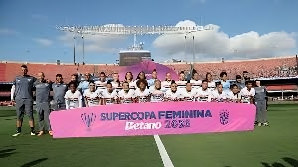
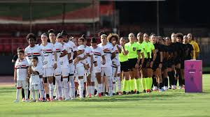

São Paulo conquista Supercopa Feminina 2025
No último domingo (8 de junho de 2025), o São Paulo Futebol Clube levantou pela primeira vez a taça da Supercopa Feminina, derrotando o Corinthians por 2 a 1 em plena casa, no Estádio do Morumbi. A torcida tricolor compareceu em peso — mais de 14.000 pessoas — e testemunhou uma partida emocionante do início ao fim.
O espetáculo da decisão
Desde o apito inicial, o duelo teve cara de final. O São Paulo pressionou alto, apertando a saída de bola corintiana, e conseguiu abrir o placar aos 17 minutos do primeiro tempo. Em jogada construída pela lateral direita, a meia Jéssica Silva cruzou na cabeça de Nycole, que testou firme no canto esquerdo da goleira Cinthia Santos. A galera explodiu em comemoração e manteve o volume de voz até o apito.
O Corinthians não se abateu: buscou espaços pelo meio e igualou aos 33’, em cobrança de falta de Yamara que passou por toda a barreira e morreu no ângulo, sem chance para a arqueira tricolor Letícia. A rivalidade histórica ganhou ainda mais tempero quando os jogadores de ambas as equipes começaram a disputar cada lance com mais intensidade.
Na segunda etapa, o técnico Maria Duarte sacou a atacante Rafaela Lima e apostou na velocidade de Karina Oliveira. A mudança surtiu efeito imediato: aos 24 minutos, Karina recebeu na entrada da área, driblou a zagueira e bateu colocado no canto, recolocando o São Paulo à frente do placar. A partir daí, coube ao setor defensivo, liderado pela capitã Thaisa, segurar a pressão corintiana até o apito final.
Campanha marcante
O caminho até o título foi sem tropeços: cinco partidas, quatro vitórias e um empate, 12 gols marcados e apenas 3 sofridos. No mata-mata, o São Paulo eliminou:
- Flamengo (quartas): 3 x 0, com hat-trick de Nycole.
- Palmeiras (semifinal): 1 x 1, vitória por 4 x 3 nos pênaltis.
- Corinthians (final): 2 x 1.
Essa invencibilidade comprova o trabalho intenso na base e no profissional, unindo juventude e experiência sob o comando de Maria Duarte.
Destaques individuais
- Nycole: artilheira da competição, com 6 gols, sendo decisiva nos momentos chave.
- Karina Oliveira: entrou no segundo tempo da final e marcou o gol do título.
- Letícia (goleira): fez defesas fundamentais, sobretudo no pênalti da semifinal, garantindo a vaga na decisão.
- Thaisa (capitã): liderança inquestionável na zaga, orientando a equipe em campo e ajudando a controlar o ritmo do jogo.
Próximos desafios
Agora, o São Paulo volta as atenções para o Campeonato Brasileiro Feminino, que começa em agosto de 2025. O técnico Maria Duarte já projeta reforços pontuais para manter o nível e disputará também a Copa Libertadores Feminina, caso confirme vaga via Brasileirão. Em entrevista pós-jogo, ela celebrou:
“Esse título é resultado de muito trabalho e união. Essas meninas merecem, e vamos seguir com a mesma fome para alcançar ainda mais conquistas.”
A torcida tricolor, é claro, já canta o hino e faz planos para encher o Morumbi novamente — agora visando repetir a dose no Nacional e escalar mais uma conquista histórica.